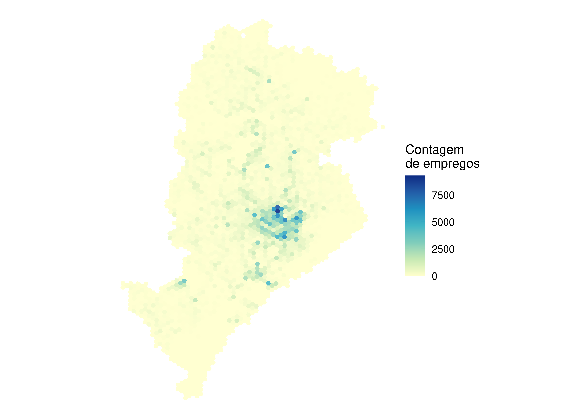
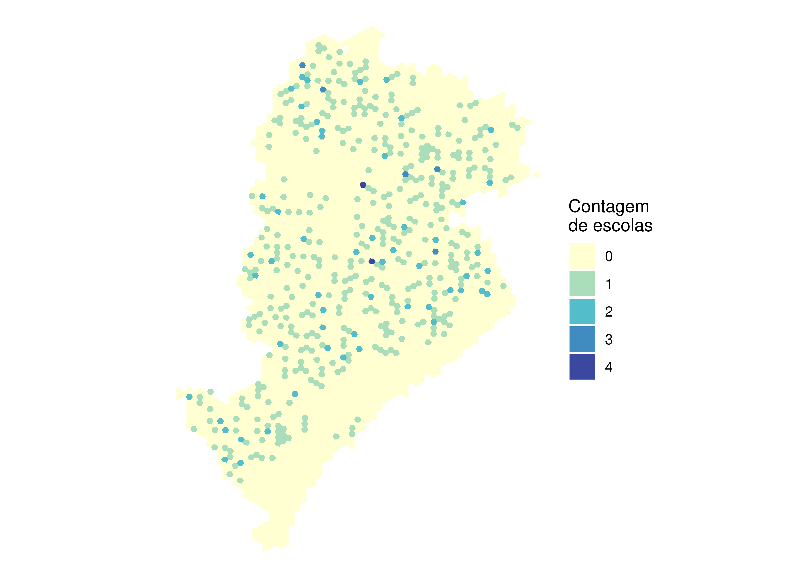
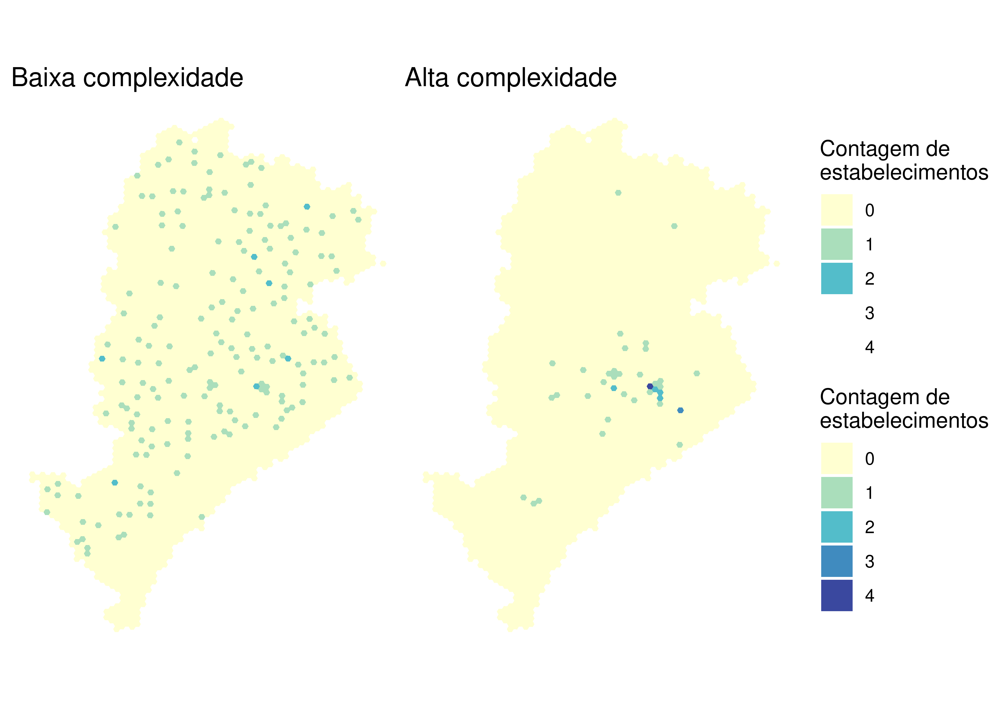
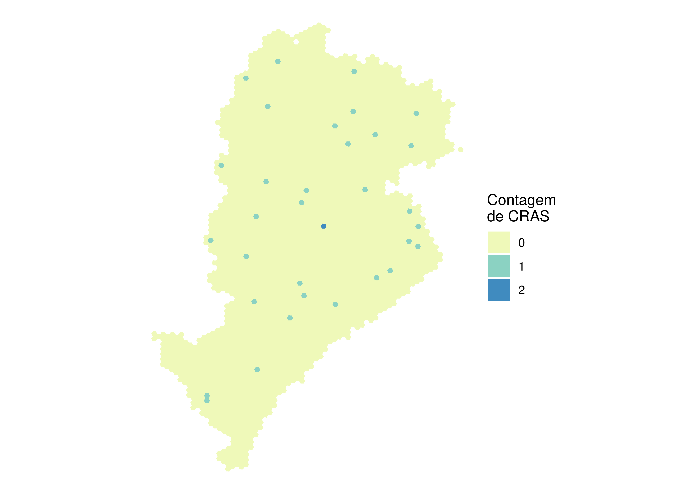

O pacote {aopdata} permite baixar, para todas cidades incluídas no projeto, dados de 2017, 2018 e 2019 sobre a distribuição espacial de empregos (de baixa, média e alta escolaridade), estabelecimentos públicos de saúde (de baixa, média e alta complexidade), escolas públicas (ensino infantil, fundamental e médio) e CRAS.
Esses dados podem ser baixados com a função read_landuse(), que funciona de forma análoga à read_population(). Para isso, basta indicar na chamada a cidade cujos dados são desejados (parâmetro city) e o ano de referência (year), além de apontar se deseja incluir as informações espaciais dos hexágonos (geometry).
No exemplo a seguir, mostramos como baixar os dados de uso do solo de 2019 para Belo Horizonte. Note que essa função resulta em uma tabela que também traz, automaticamente, os dados de população.
A Tabela 8.1 apresenta a descrição das colunas da tabela (excluindo as previamente incluídas na tabela de dados sociodemográficos). Essa descrição também pode ser consultada na documentação da função, rodando em uma sessão de R o comando ?read_landuse.
Tabela 8.1: Descrição das colunas da tabela de dados de distribuição espacial de oportunidades
Coluna
Descrição
year
Ano de referência
id_hex
Identificador único do hexágono
abbrev_muni
Sigla de três letras do município
name_muni
Nome do município
code_muni
Código de sete dígitos do IBGE do município
T001
Quantidade total de empregos
T002
Quantidade de empregos de baixa escolaridade
T003
Quantidade de empregos de média escolaridade
T004
Quantidade de empregos de alta escolaridade
E001
Quantidade total de estabelecimentos públicos de ensino
E002
Quantidade de estabelecimentos públicos de ensino infantil
E003
Quantidade de estabelecimentos públicos de ensino fundamental
E004
Quantidade de estabelecimentos públicos de ensino médio
M001
Quantidade total de matrículas públicas de ensino
M002
Quantidade de matrículas públicas de ensino infantil
M003
Quantidade de matrículas públicas de ensino fundamental
M004
Quantidade de matrículas públicas de ensino médio
S001
Quantidade total de estabelecimentos de saúde
S002
Quantidade de estabelecimentos públicos de saúde de baixa complexidade
S003
Quantidade de estabelecimentos públicos de saúde de média complexidade
S004
Quantidade de estabelecimentos públicos de saúde de alta complexidade
C001
Quantidade total de CRAS
geometry
Geometria espacial
As subseções a seguir mostram exemplos de visualizações desses dados em forma de mapas.
8.1 Mapa de empregos
No código adiante, carregamos bibliotecas de visualização de dados e configuramos o mapa. As variáveis iniciadas com a letra T são as que descrevem a distribuição espacial de empregos em cada cidade. A seguir, apresentamos a distribuição espacial do total de empregos em cada hexágono (variável T001) em Belo Horizonte:
library(patchwork)library(ggplot2)ggplot(dados_bh) +geom_sf(aes(fill = T001), color =NA, alpha =0.9) +scale_fill_distiller(palette ="YlGnBu", direction =1) +labs(fill ="Contagem\nde empregos") +theme_void()

Figura 8.1: Distribuição espacial de empregos em Belo Horizonte
8.2 Mapa de escolas
As variáveis que indicam o número de escolas públicas em cada célula, por sua vez, começam com a letra E. No exemplo a seguir, apresentamos a distribuição espacial de todas as escolas públicas de Belo Horizonte (variável E001).
ggplot(dados_bh) +geom_sf(aes(fill =as.factor(E001)), color =NA, alpha =0.9) +scale_fill_brewer(palette ="YlGnBu", direction =1) +labs(fill ="Contagem\nde escolas") +theme_void()

Figura 8.2: Distribuição espacial de escolas em Belo Horizonte
8.3 Mapa de estabelecimentos de saúde
As variáveis que contêm os dados dos estabelecimentos públicos de saúde em cada célula começam com a letra S. A visualização a seguir compara a distribuição espacial de estabelecimentos públicos de saúde de baixa complexidade (S002) e de alta complexidade (S004).
saude_baixa <-ggplot(dados_bh) +geom_sf(aes(fill =as.factor(S002)), color =NA, alpha =0.9) +scale_fill_brewer(palette ="YlGnBu", direction =1, limits =factor(0:4)) +labs(title ="Baixa complexidade", fill ="Contagem de\nestabelecimentos") +theme_void()saude_alta <-ggplot(dados_bh) +geom_sf(aes(fill =as.factor(S004)), color =NA, alpha =0.9) +scale_fill_brewer(palette ="YlGnBu", direction =1, limits =factor(0:4)) +labs(title ="Alta complexidade", fill ="Contagem de\nestabelecimentos") +theme_void()saude_baixa + saude_alta +plot_layout(guides ="collect")

Figura 8.3: Distribuição espacial de estabelecimentos de saúde de baixa e alta complexidade em Belo Horizonte
8.4 Mapa de CRAS
Por fim, a variável C001 descreve a distribuição espacial de CRAS em cada cidade. A Figura 8.4 apresenta essa distribuição em Belo Horizonte.
ggplot(dados_bh) +geom_sf(aes(fill =as.factor(C001)), color =NA, alpha =0.9) +scale_fill_brewer(palette ="YlGnBu", direction =1) +labs(fill ="Contagem\nde CRAS") +theme_void()

Figura 8.4: Distribuição espacial de CRAS em Belo Horizonte